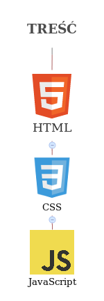

- Opakowuje i opisuje treść strony
- Mówi przeglądarce o strukturze dokumentu
(i o tym co ma wczytać)
- Posiada swoją zdefiniowaną składnie
- Nie jest językiem programowania, jest
językiem znaczników (Markup Language)
- Odpowiada za prezentację treści strony
- nie ma jednej wersji
- przegladarki potrafia równie interpretować CSS
- Kod JS uruchamia się raz (po załadowaniu strony)
- Java to nie JavaScript
- JavaScript implementuje rzeczy ze specyfikacji ECMAScript
- JavaScript to frontendowe programowanie
- Za pomocą JS można robić różne szalone rzeczy
przejdź do góry strony